声音表达
播音部
负责日常广播，用声音讲述青春故事。
声音表达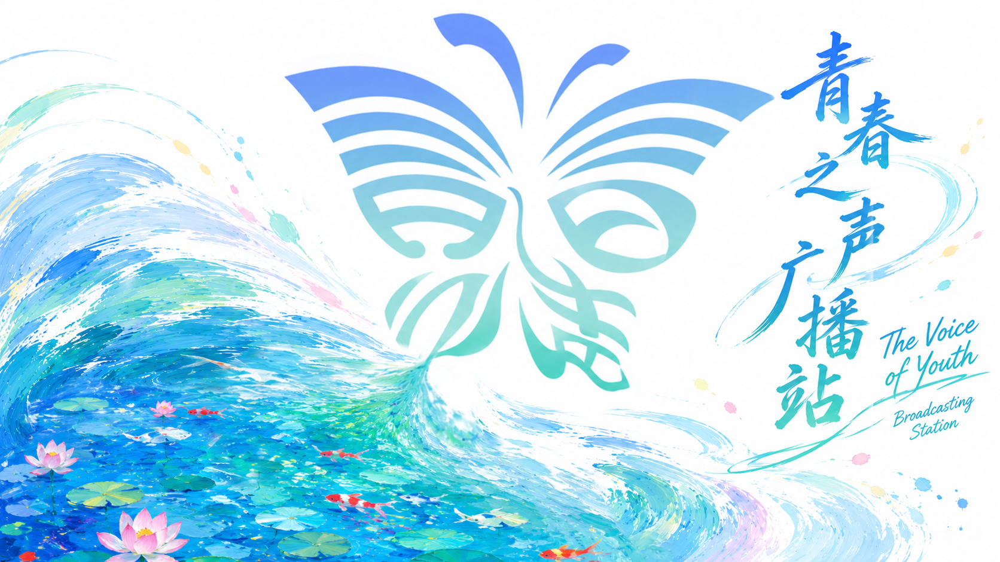
第 01 频道 · 社团简介
用温暖清晰的声音，记录每一段值得被听见的校园日常。
青春之声广播站是一个校园广播平台，包括播音部、传媒部、编辑部、管理部、校史馆五个部门，以传播校园文化、服务师生为宗旨，长期开展主持人大赛、配音大赛等活动。
社团致力于成为学院建设、改革、发展的前沿阵地，成为传播知识的殿堂和师生沟通的桥梁，形成兼具新闻时效性、文艺感染力、校园服务性的广播特色。
未来，社团将继续深耕音频内容创作，立足校园沃土，用温暖清晰的声音记录校园日常，搭建师生沟通桥梁，打造更具影响力的校园有声文化阵地，为校风学风建设做出努力和贡献。
第 02 频道 · 部门组成
从声音表达、内容策划到校园历史讲述，共同完成一次次青春播出。
声音表达
负责日常广播，用声音讲述青春故事。
声音表达新媒传播
负责线上平台运营，是社团宣传主力军。
平台运营内容策划
负责专题策划及活动稿件编撰，以细腻笔触记录青春之声，传递校园温情。
内容策划组织统筹
负责财务、人员管理以及活动组织。
组织统筹校史讲解
负责校史馆参观预约与讲解，开展成员讲解培训与讲解赛事，传递校园历史底蕴。
校史讲解第 03 频道 · 精彩瞬间
换届、赛事、培训与公益行动，共同组成广播站的青春声场。
第 04 频道 · 活动档案
从主持与配音赛事，到劳动实践、公益摄影和校史讲解，持续扩展校园声音的边界。
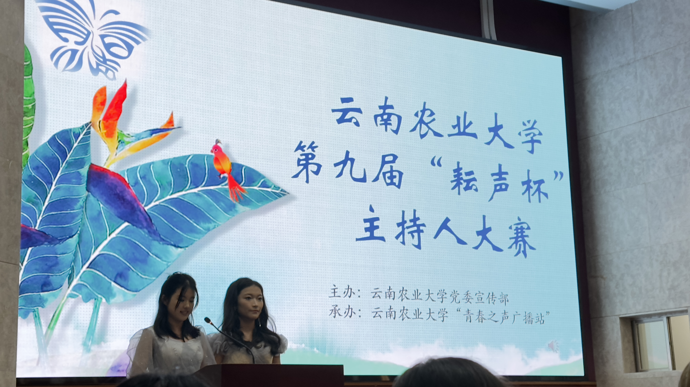
2023.12为全校在校大学生提供展示自我、提高个人能力的平台。通过比赛，使参赛者展现口才与临场能力，尽展当代大学生青春风采，同时丰富校园生活，推动校园精神文明良性进步。
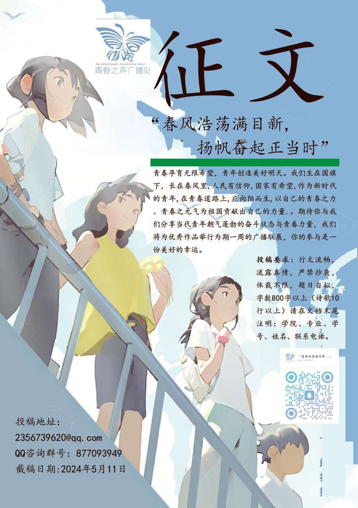
2024.05作为新时代青年，应向阳而生，以青春之力、青春之元气为祖国贡献力量。活动为同学们搭建良好平台，展现当代青年朝气蓬勃的奋斗状态与青春力量。
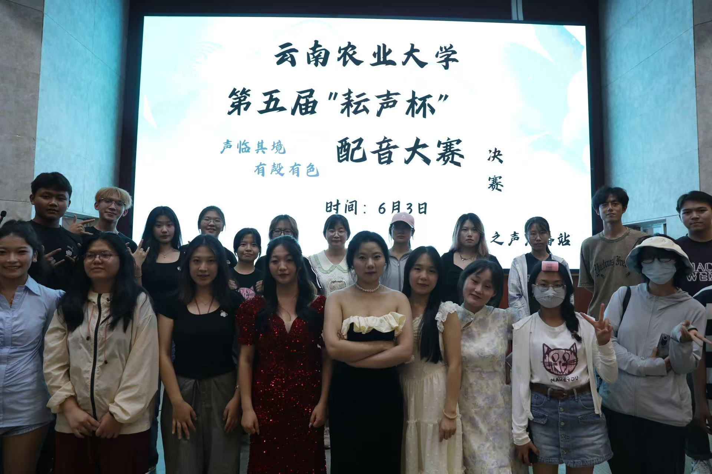
2024.06青春之声广播站以举办校园配音大赛的形式，用声音连接角色，以创意点亮舞台。比赛旨在锻炼大学生语言表达能力，丰富课余生活，培养文学素养，提高综合能力。
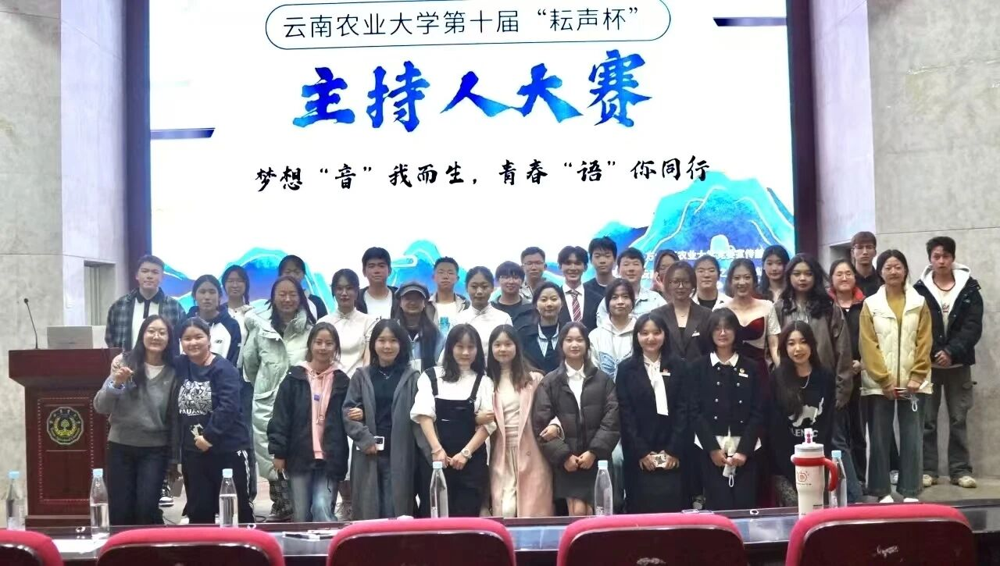
2024.11为全校在校大学生提供展示自我、提高个人能力的平台。通过比赛，使参赛者展现口才与临场能力，尽展当代大学生青春风采，同时丰富校园生活，推动校园精神文明良性进步。
查看活动报道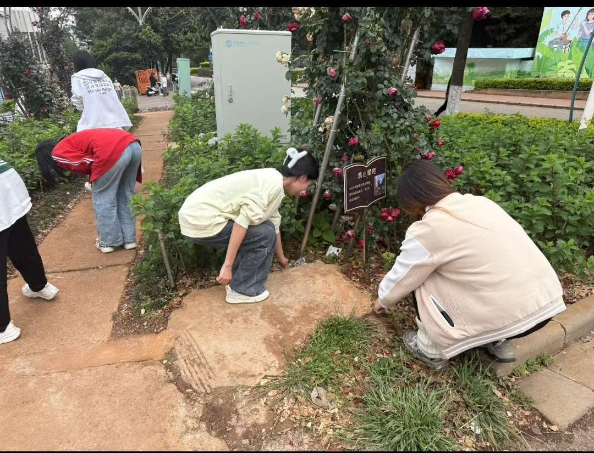
2025.05除草活动通过田间实践，将耕读文化与劳动教育融合，让学生体验农耕艰辛、感悟劳动价值，在协作中培养责任感，淬炼坚韧品格，厚植劳动情怀。
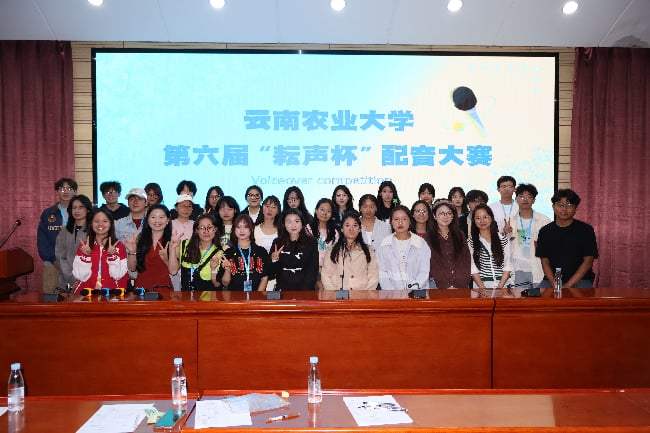
2025.06青春之声广播站以举办校园配音大赛的形式，用声音连接角色，以创意点亮舞台。比赛旨在锻炼大学生语言表达能力，丰富课余生活，培养文学素养，提高综合能力。
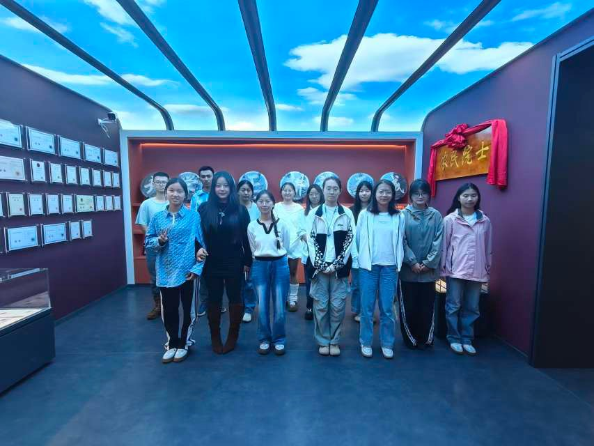
2025.10朱有勇院士积极投身脱贫攻坚主战场，将科研成果应用于扶贫事业，是精准扶贫、精准脱贫重要思想的忠实践行者。活动通过参观校史馆内相关物品学习朱有勇院士的相关精神。
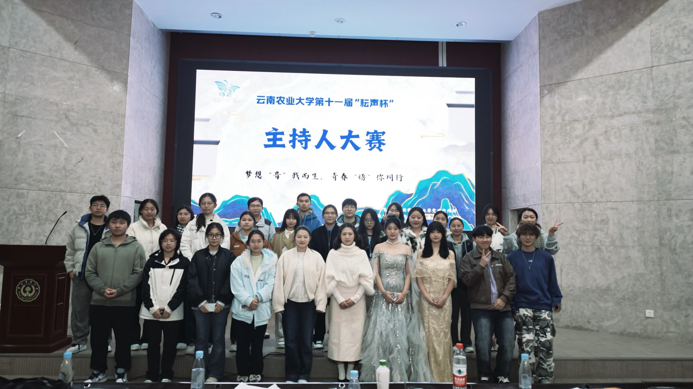
2025.11为全校在校大学生提供展示自我、提高个人能力的平台。通过比赛，使参赛者展现口才与临场能力，尽展当代大学生青春风采，同时丰富校园生活，推动校园精神文明良性进步。
查看活动报道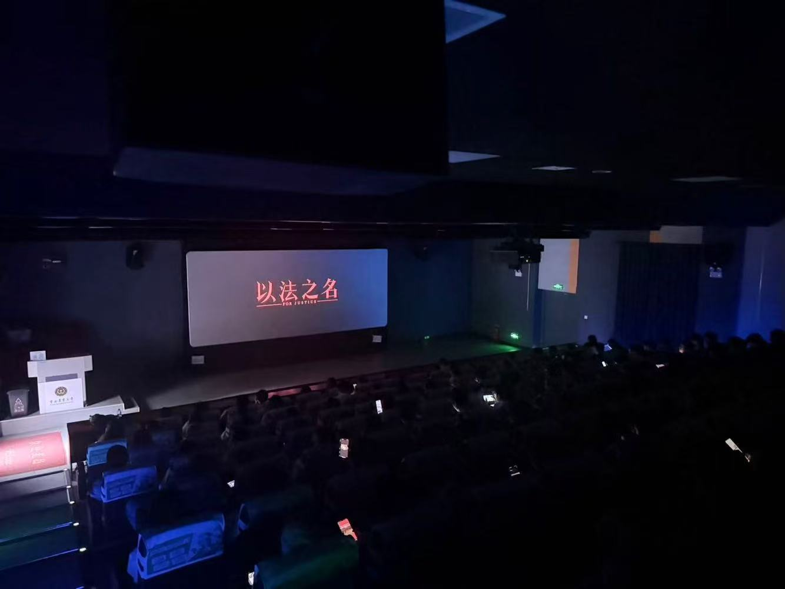
2026.04活动以电影为载体，将法治教育与文化熏陶相结合，让青年学生在沉浸式体验中感悟法治精神，深化对法律援助制度的理解，并通过互动环节激发思辨能力与社会责任感。
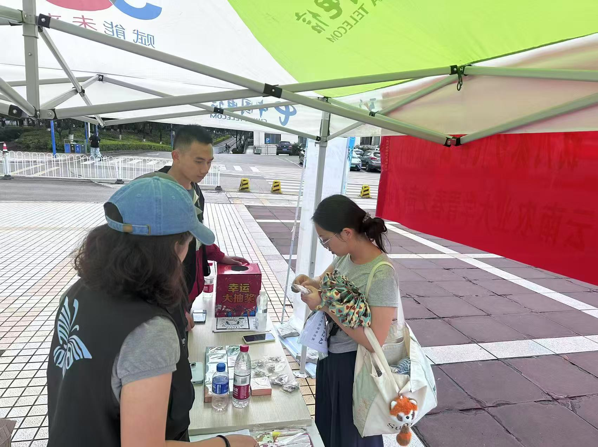
2026.04为表达对家乡的思念，促进家乡资源宣传和推广，举办“筑梦乡村，振兴未来”我为家乡代言公益摄影大赛，为大学生关注家乡发展、宣传家乡人文、推介家乡硕果、展现家乡美景搭建平台。
查看活动报道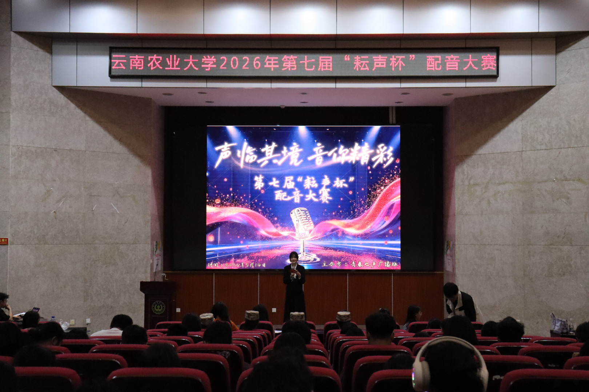
2026.05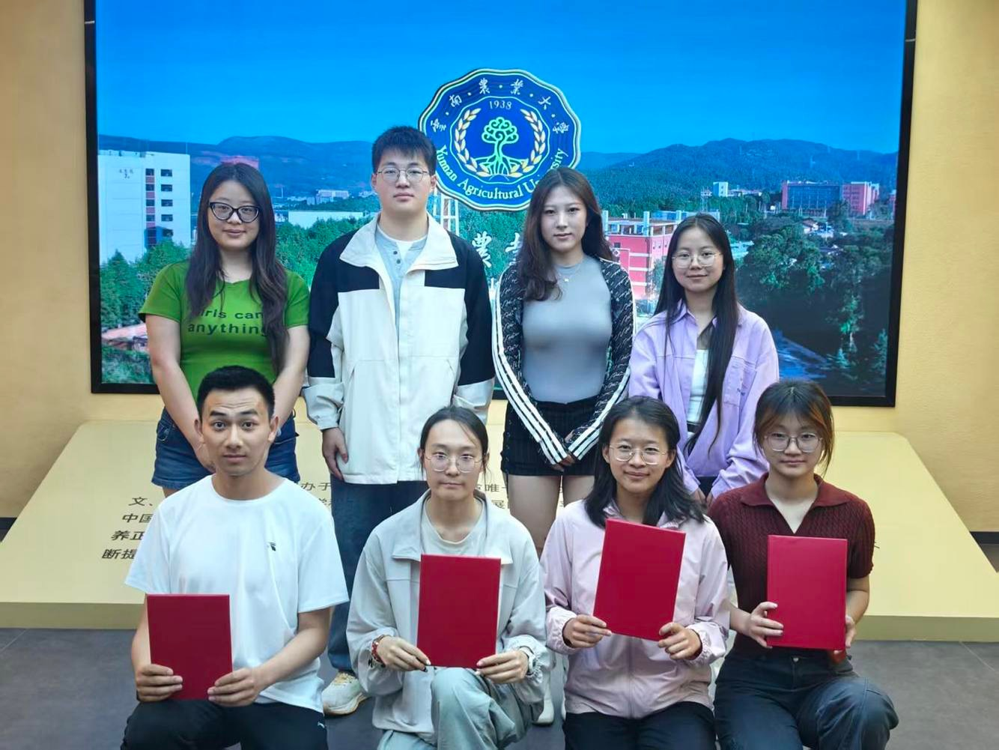
2026.06云南农业大学校史馆讲解大赛重温峥嵘岁月、传承精神文脉，用声音讲述母校故事，展现学子风采，共同做历史与未来的连接者。
第 05 频道 · 荣誉墙
荣誉记录社团持续发声、服务校园与组织建设的成长轨迹。
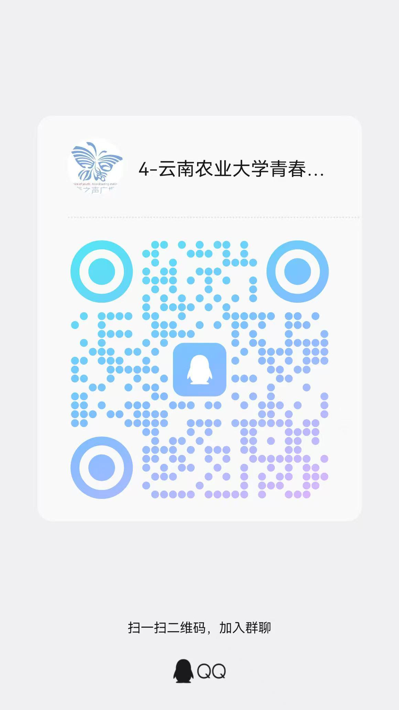